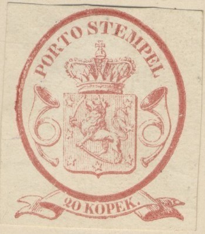
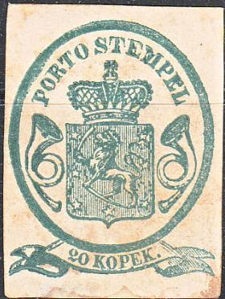
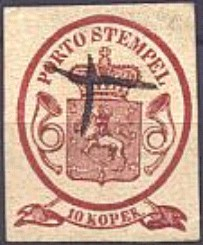
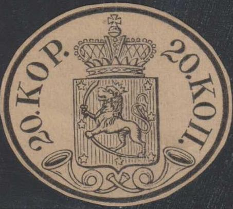
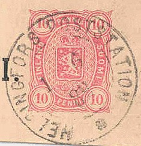
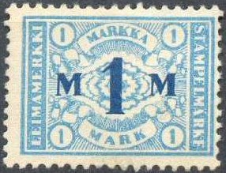

Certified genuine envelope
Return To Catalogue - Finland 1856 issue - Finland 1860-1874 - Finland 1875-1890 - Finland 1891-1916 - Finland 1917 onwards - Finland Railway and Ferry stamps
Note: on my website many of the
pictures can not be seen! They are of course present in the
catalogue;
contact me if you want to purchase the catalogue.
Certified genuine envelope


Most likely forgeries....
10 k black 20 k red
These envelopes were ONLY issued in the colours: 10 k black and 20 k red. These envelopes are very rare. Ferdinand Elb, a forger in Dresden, Germany, made forgeries in the reverse colours: 10 k red and 20 k black. He then sold them for £50 or more each! (see: Album Weeds by Earee or Philatelic Forgers, their lives and works by Varro E. Tyler). The confusion thus created was so good that official reprints were in 1862 of all 4 values (thus including the bogus colors)! By 1872 a second reprint was ordered, this time only of the two genuine stamps.
Forgeries in the wrong colours:



(Forgeries in the wrong colours)


20 k forgeries, with very strong vertical shading on the ribbons.
Other forgeries


Forgery with a 'cap' over the eyes of the lion.
(Probably forgeries, reduced sizes)
A bunch of reprints also in fancy colors.

Fancy colors 10 k blue and green.
A Senf forgery exists of the 20 k envelope

This stamp was distributed with the journal the 'Illustrierten Briefmarken Journal', No 23 (3 December 1887). It always bears the overprint 'Facsimile' in black.

Commemorative stamp in the same design


5 k blue 10 k red 20 k black Re-issue in 1856 in slightly modified design 5 k blue 10 k red
Some of these postcards were overprinted with a 1860 stamp design alike pattern at the back in 1860(?). These are very rare.
 
Probably forgeries of the 20 k envelope and a bogus 10 k black.

5 k blue (7 stars) 10 k red (7 stars) 10 k red (8 stars) 20 p blue (1871) 40 p red (1871)
8 p green 10 p lilac
Arms of Finland, black, red and yellow, no value. Issued to commemorate the Russian occupation of Finland:
With 'PENNIA' at the top:

(reduced sizes)
10 p red 10 p orange 10 p blue 16 p brown 20 p blue 20 p orange 25 p blue (Other values might exist)
10 p red 20 p orange 25 p blue
In 1865 the first fiscal stamps were issued in Finland (design similar to the 1866 issue, sorry, no picture available yet). The arms of Finland are at the upper side of the stamp, a seal in the bottom and the value in the center. The following values were issued: 20 p, 30 p, 40 p, 50 p, 60 p, 70 p, 80 p, 1 M, 1 1/2 M, 2 M, 3 M, 4 M, 5 M, 6 M, 7 M, 8 M, 10 M, 15 M, 20 M, 25 M, 30 M, 40 M and 50 M. The penni values are in the colour brown, the Mark values in blue.

The following values were issued: 10 p, 20 p, 25 p, 30 p, 40 p, 50 p, 60 p, 80 p, 1 M, 1 1/2 M, 2 M, 3 M, 4 M, 5 M, 6 M, 7 M, 8 M, 10 M, 15 M, 20 M, 25 M, 30 M, 40 M, 50 M, 60 M, 80 M, 100 M, 150 M, 200 M and 500 M. The penni values are in the colour brown, the Mark values in blue.
The following values were issued: 5 p, 10 p, 20 p, 25 p, 30 p, 50 p, 1 M, 1 1/2 M, 2 M, 3 M, 4 M, 5 M, 6 M, 7 M, 8 M, 10 M, 15 M, 20 M, 25 M, 30 M, 40 M, 50 M, 60 M, 80 M, 100 M, 150 M, 200 M and 500 M. The penni values are in the colour brown, the Mark values in blue.
(Inscription 'STAMPELMARKE LEIMAMERKKI', reduced size)
The following values were issued: 5 p, 10 p, 20 p, 25 p, 40 p, 50 p, 1 M, 1 1/2 M, 2 M, 3 M, 4 M, 5 M, 10 M, 15 M, 20 M, 25 M, 30 M, 40 M, 50 M, 100 M, 200 M and 500 M. The penni values are in the colour brown, the Mark values in blue. Also a larger 10000 M in red was issued (rare).

'KENTTAPOSTIA FALTPOST'
'Forgeries of Finnish Postage Stamps' by Mikka Ossa (both in Finnish and English)
'Finnland Fruhe Ortstempel' by Rolf Gummeson 96 pages.
{kind=link}
{kind=link}
{kind=link}